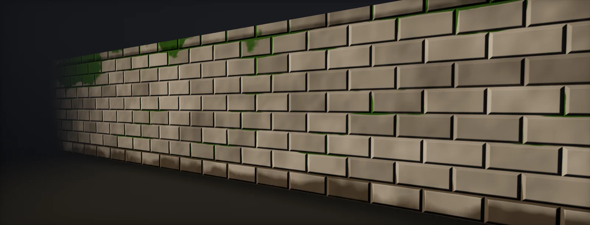

Layered Tiling Materials and Decals
Why unique textures do not scale, the layer stack of base materials, material blending and decals, where blend masks come from, height-modulated blending, several tiling scales that never repeat together, mesh and projected decals, a case study of Indiana Jones and the Great Circle, and what layers cost, built in Unity HDRP and Unreal.

Unique textures do not scale
Unique textures give every square metre its own texels, so their memory grows with the area of the level. A tiling library grows only with the number of materials in it; masks that say where each material appears can be very low resolution, or free in vertex colours:
Tiling also wins on detail up close. A unique texture at a few hundred texels per metre runs out of resolution once the camera is a metre or two away; a tiling layer at several thousand texels per metre stays sharp at arm's length:
The two are often combined: a module keeps a modest unique bake for its large forms (ambient occlusion, broad normals), and tiling layers on top carry all the fine detail. The question then becomes how to hide the tiling and decide where each material goes, which is what the rest of this unit is about.
The layer stack
Studios that build large worlds from tiling materials converge on the same order of layers, each adding a different kind of detail:
| Layer | What it adds | Driven by |
|---|---|---|
| Base material | The surface: plaster, stone, metal; tiling, often with a unique bake for the large forms of a module | Tiling UVs or projection; unique UVs for the bake |
| Material blending | A second (third, fourth) full material: dirt, moss, damage, wet areas, exposed brick under plaster | Vertex colour, low-resolution masks, tiling or world-space masks, sharpened by height maps |
| Mesh decals (geo decals) | Edges, cracks, seams, panel lines, trims: detail that follows the geometry | Extra geometry with its own UVs into a decal sheet |
| Projected decals | Stains, leaks, signs, impact marks: detail placed in the level | Decal volumes (boxes) placed by artists or gameplay |
id Software's environment artists describe Doom Eternal's surfaces exactly this way: a base material, then geo decals, material blending and projected decals, in an order that varies per shot. id's own rendering talk calls material blending "the first step" of adding detail to the world. The Coalition's layered material system for Gears of War 4 let artists stack dozens of library materials with masks and blend modes, then flattened ("cooked") each stack into a cheaper shader for the 60 fps target. Engines ship versions of the idea: HDRP's Layered Lit shader (up to four layers) and Unreal's Material Layers.
Where blend masks come from
A blend mask decides where the second material appears. Each source has its own resolution and cost:
- Vertex colour: free in texture memory, painted per placed instance in the level, but only as fine as the vertex spacing. id's tool paints full material stacks into vertex colours, mostly on environment geometry.
- Low-resolution unique masks: a small texture over unique UVs, for organic assets and characters, where vertex density is uneven (id uses "texture blend weight maps" there).
- Tiling masks: grunge and breakup patterns in their own UV scale, in object or world space, so they never line up with the material tiles.
- Procedural and world-space terms: the surface normal (moss and snow on top), world height (water lines), distance to the ground (dirt at the base), curvature and AO from a bake.
Vertex colour is the cheapest and the most common, but it needs vertices where the blends should change:
id's vertex painting shares LOD0 geometry between all painted instances of a mesh, and generates the lower LODs uniquely per paint job, so the paint survives the LOD transitions without visible pops. In engines without that, check that the painted LODs keep enough vertices, or fade the paint to a texture mask at a distance.
Height-modulated blending
A painted or low-resolution mask is soft and blobby. Blending by height turns it into a detailed edge: where the mask says "half and half", the material whose height map is higher at that texel wins, so moss fills the cracks first and dirt collects between the cobbles. id's material blending modulates its vertex-painted weights with the materials' height maps for exactly this reason, "to add high-frequency detail" that the painting itself cannot have:
// Height-modulated blend of two layers: the painted weight w (0..1, e.g. from vertex colour)
// moves the threshold, the height maps decide which material is on top at each texel.
float HeightBlend(float w, float hBase, float hLayer, float contrast)
{
// contrast ~0.05 (sharp) .. 0.5 (soft)
float a = hBase + (1.0 - w);
float b = hLayer + w;
return saturate((b - a) / contrast * 0.5 + 0.5); // 0 = base, 1 = layer
}
The same function works with any weight: vertex colour, a tiling mask, a world-space term or their product. HDRP's Layered Lit has it built in (Use Height Based Blend, with a Height Transition width); in Unreal it is the HeightLerp material function.
Detail that does not repeat: several tiling scales
Each tiling layer repeats, but a stack of them only repeats when all their tiles line up again. Give the base material, the blend mask and a macro variation layer tile sizes whose ratios are not simple fractions, and the combination repeats over distances far larger than any single tile; in between, every spot shows a different combination:
- Avoid simple ratios: a mask at exactly twice or three times the base tile repeats with it.
- Project masks in world space (or object space with a per-instance offset), so two copies of the same module do not share the same mask placement.
- Rotate a mask layer by an angle that is not a multiple of 90° against the material tiles.
- Let the height blend use the base material's own height, so the edges of the mask come from the texture's detail and never look like the mask's tiles.
This is how a small library of tiling materials and masks covers a whole level without visible repetition. Where it is still not enough on the largest surfaces, sample the base material with anti-tiling (hex tiling).
Mesh decals and projected decals
Decals add the detail that tiling cannot place: a crack exactly along an edge, a stain under a pipe, a sign. Mesh decals (geo decals) are extra pieces of geometry that sit just above the surface, with their own UVs into a decal sheet; they follow the shape of the asset, are authored with it and cost a few triangles. Projected decals are boxes that project a texture onto whatever lies inside them:
id's renderer gives a sense of scale and budget. Geometry decals in Doom Eternal are projections stored as a 2 × 4 matrix (32 bytes) per decal, authored on the mesh; an extra pass after the depth prepass writes the decal index per pixel in about 50 µs, with up to 254 projections per submesh and a million per level. Projected decals and lights go through a binned (clustered) system that handles thousands of them per scene within a budget of under 0.5 ms. In HDRP and Unreal, both kinds blend into the G-buffer or a decal buffer (DBuffer) before lighting, so they receive light like the surface below.
Case study: Indiana Jones and the Great Circle
MachineGames built Indiana Jones and the Great Circle (2024) on Motor, its fork of id Tech 7. The team has described its surfacing only at a high level so far; this is what the public sources say, and what they leave open.
On record.
- The studio's GDC 2026 talk on aging the game's environments (Vytautas Katarzis, Antonio Vaz Figueiredo, Michael Tran) names the building blocks as base materials, layered blends and geo decals, with Substance 3D Painter workflows and architectural module design.
- Senior environment artist George McLay describes the Pyramid Tower walls as "classic baked modules with tiling detail materials", with a "multilayered shader for tiling materials" that keeps detail high under close inspection, and modules that interlock with the pieces above and below.
- A Gnomon livestream with the studio's artists names texture blend shaders, trim sheets and decals as the techniques for its vehicles at current-generation texel density.
The engine family's documented system. id Software's description of Doom Eternal's renderer, the same engine lineage, fills in the mechanics: full material stacks blended mostly by vertex painting (four materials per asset, two per triangle), weights modulated by height maps, lower LODs generated per paint job, geometry decals authored on meshes and binned projected decals. Whether Motor kept these exact limits is not public.
The workflow those pieces add up to, as you would rebuild it: modules with a unique bake for their large forms; two to four tiling materials per module at high texel density, blended per instance by vertex paint and tiling masks, with height-modulated transitions; mesh decals along edges and seams; projected decals for story details; and mask and material scales chosen so they never line up. The result is detail that holds up at arm's length everywhere, from a library of materials that fits in memory.
The talk recording is in the GDC Vault. Its details (mask sources, layer limits, shader costs) may differ from the reconstruction above; check the talk before treating any limit here as MachineGames' own.
What layers cost
Every layer adds samples for each of its maps, and a mask or two. Sampling every layer everywhere quickly gets expensive; limiting how many layers can meet in one place keeps the cost bounded:
- Limit layers per triangle and pick the two (or three) active layers per triangle or per pixel, so the shader samples only those.
- Skip layers with zero weight with a branch. Blend masks are smooth, so neighbouring pixels usually take the same branch and the skip is real.
- Store layers in a texture array so one shader indexes any layer (texture arrays).
- Flatten what does not change: Gears of War 4's cooker merged stack layers marked as not live into fewer textures and instructions; Unreal's runtime virtual textures cache the blended result of large surfaces such as terrain.
- Fade layers by distance: detail layers and decals are invisible far away; blend to the base or to a cached version.
Build it in Unity HDRP
HDRP ships most of the stack: the Layered Lit shader blends up to four materials by mask and vertex colour with height-based transitions, Polybrush paints vertex colours per instance, and decals cover the top of the stack. A custom graph route adds world-space masks at their own scale. Written for Unity 6 with HDRP 17; Unity 2022 LTS works the same apart from a few renamed menu entries.
- Layered Lit: create a material with the HDRP/LayeredLit shader and set Layer Count (2–4). Each layer tab (Main, Layer 1–3) has its own surface inputs: base colour, mask map, normal map, height map and tiling. Give the layers tile sizes whose ratios are not simple fractions (several tiling scales).
- Masks: a Layer Mask texture (R, G, B for layers 1–3) and/or vertex colours with Vertex Color Mode =
MultiplyorAdd Subtract. Set the Layer Mask's BlendMask UV Mapping toPlanarorTriplanarwith its own World Scale so it does not repeat with the meshes. - Height blending: tick Use Height Based Blend and set Height Transition; each layer needs a height map (with its amplitude set) for this to work. Main Layer Influence lets the base layer's colour and normals show through the layers above.
- Vertex paint: install Polybrush from the Package Manager, select a placed module and paint vertex colours. Polybrush can store the paint per instance in additional vertex streams, so copies of a module can be painted differently without duplicating the mesh.
- More than four layers or world-space masks per layer: build the blend yourself in a Lit graph with
LayerBlend.hlsl. In the graph, add a Custom Function node. Set Type toFile, Source toLayerBlend.hlsland Name toLayerBlendWeight(without the_floatsuffix). Add the inputs Paint (Float), Mask (Texture2D), MaskUV (Vector 2), MaskScale (Float), MaskAngle (Float), MaskStrength (Float), HeightBase (Float), HeightLayer (Float), Contrast (Float) and the outputs Weight (Float), in that order and with those types: they must match the function's parameters. Lerp every map of the two materials with Weight. - Decals: projected decals with a Decal Projector and an HDRP/Decal material (or Decal Shader Graph); mesh decals by assigning a decal material to the MeshRenderer of the decal geometry. Enable Decal Layers in the HDRP asset to keep decals off characters, and check the decal count per pixel in the busiest view.
// LayerBlend.hlsl: the weight of a second material over a base, for Shader Graph (Custom Function, Type: File).
// Paint painted weight 0..1 (vertex colour channel)
// Mask a tiling breakup mask, read at its own scale and rotation so it never lines up with the
// material tiles; MaskUV is world or object position projected to 2D (e.g. Position.xz)
// Heights both materials' height maps at their own UVs: they draw the final edge
// Result: 0 = base material, 1 = layer.
#ifndef ATLAS_LAYERBLEND_INCLUDED
#define ATLAS_LAYERBLEND_INCLUDED
void LayerBlendWeight_float(float Paint, UnityTexture2D Mask, float2 MaskUV, float MaskScale, float MaskAngle,
float MaskStrength, float HeightBase, float HeightLayer, float Contrast, out float Weight)
{
float c = cos(MaskAngle), s = sin(MaskAngle);
float2 uv = mul(float2x2(c, -s, s, c), MaskUV) / MaskScale; // rotated, own scale
float m = SAMPLE_TEXTURE2D(Mask.tex, Mask.samplerstate, uv).r;
float w = saturate(Paint + (m - 0.5) * MaskStrength); // the mask moves the painted threshold
float a = HeightBase + (1.0 - w);
float b = HeightLayer + w;
Weight = saturate((b - a) / max(Contrast, 1e-3) * 0.5 + 0.5); // height-modulated edge
}
#endifLayered Lit samples all active layers everywhere; with four full layers that is a lot of samples per pixel. Use two or three layers on most surfaces and bake static combinations into textures where a surface never changes.
Build it in Unreal Engine
Unreal's Material Layers hold the stack as reusable assets, HeightLerp does the height-modulated blend, Mesh Paint Mode paints vertex colours per instance, and DBuffer and mesh decals finish it. Written for Unreal Engine 5.6 and later. Substrate is production-ready from 5.7; check Project Settings > Rendering > Substrate to see which material model a project uses.
- Layers: create Material Layer assets (one tiling material each, output as Material Attributes) and Material Layer Blend assets (the blend logic). In the parent material enable Use Material Attributes, add a Material Attribute Layers node into the output, and stack layers in the material instance's Layer Parameters panel.
- Blend: inside the Layer Blend, use the HeightLerp function (inputs A, B, Transition Phase, Height Texture, Contrast) with the painted weight as the transition phase, or a Custom node with
LayerBlendWeight.ushwhen the mask should be rotated and scaled in world space. - World-space masks: Absolute World Position / tile size in cm as MaskUV, with a rotation that is not a multiple of 90°; for walls, use the WorldAlignedTexture function for the mask.
- Vertex paint: Mesh Paint Mode > Colors, paint on placed meshes; the colours are stored per instance on the component, so copies of a module differ. Use the Vertex Color node channels as Paint.
- Decals: enable Project Settings > Rendering > DBuffer Decals; projected decals are Decal Actors with a material of domain Deferred Decal; mesh decals are static meshes with such a material assigned. Watch Shader Complexity where decals stack.
- Large surfaces: a Runtime Virtual Texture can cache the blended result (landscapes, big floors) so the layers are evaluated once per page instead of every frame.
// Custom node "LayerBlendWeight". Inputs: Paint (float), Mask (Texture Object), MaskUV (float2), // MaskScale (float), MaskAngle (float), MaskStrength (float), HeightBase (float), HeightLayer (float), // Contrast (float). Output Type: CMOT Float 1 (0 = base, 1 = layer). float c = cos(MaskAngle), s = sin(MaskAngle); float2 uv = mul(float2x2(c, -s, s, c), MaskUV) / MaskScale; float m = Texture2DSample(Mask, MaskSampler, uv).r; float w = saturate(Paint + (m - 0.5) * MaskStrength); float a = HeightBase + (1.0 - w); float b = HeightLayer + w; return saturate((b - a) / max(Contrast, 1e-3) * 0.5 + 0.5);
Material Layers compile to one shader per stack; keep the number of layers per instance small and reuse layer assets, so the library stays a library and not a set of unique stacks.
Sources and further reading
The formulas and engine details in this unit come from these references. Engine documentation changes between versions.
- TalkAged by Adventure: Crafting the Time-Worn World of Indiana Jones and the Great CircleMachineGames · GDC 2026Base materials, layered blends and geo decals; aging, weathering and modules.
- PortfolioIndiana Jones and the Great Circle: Pyramid TowerGeorge McLay · MachineGamesBaked modules with tiling detail materials and a multilayered shader for tiling materials.
- EventExploring the Art of Indiana Jones and the Great Circle with MachineGamesGnomon · 2025Texture blend shaders, trim sheets and decals at current-generation texel density.
- TalkRendering the Hellscape of Doom Eternalid Software · SIGGRAPH 2020Material blending by vertex paint (4 per asset, 2 per triangle), height modulation, geometry and binned decals.
- PortfolioDoom Eternal: surfacingFelix LeyendeckerThe layer order: base material, geo decals, material blending, projected decals.
- TalkGears of War 4: Creating a Layered Material System for 60fpsThe Coalition · SIGGRAPH 2017Stacks of library materials, live and cooked layers, flattening for performance.
- DocsLayered Lit ShaderUnityFour layers, layer mask and vertex colour modes, height-based blend, main layer influence.
- ReferenceIndiana Jones and the Great CircleWikipediaEngine (Motor, a fork of id Tech 7) and rendering features.